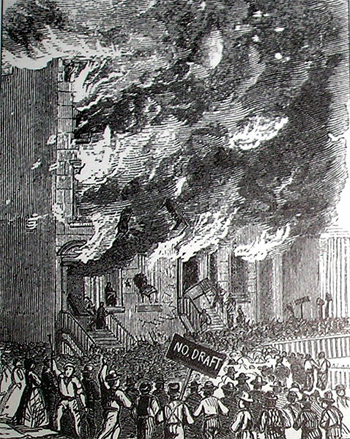

|
Between July 13th and July 17th, 1863, a massive social disturbance wracked New
York City. The Draft Riots resulted in over a hundred deaths and the
destruction of numerous city structures, and was the most deadly such urban
revolt in American history up to that time. The riots also revealed social
divisions within metropolitan society in the nineteenth century, as political
and racial tensions exploded in a single week of mayhem.
In March 1863, the Republican-controlled government passed the Conscription
Act, a piece of legislation that made all men aged twenty to thirty-five and all
unmarried men between thirty-five and forty-five eligible for the draft. By
this time, the war was not going well for the North. Tensions between Northern
Democrats and Republicans over the conduct and continuance of the conflict were
increasing throughout the Union. The telegraphic press reported horrific
stories of gory violence daily. There was a sense of uncertainty over the aims
and possible outcome of the Civil War.

A newspaper engraving of the riots.
|
The unpopularity of the conflict was compounded by the Conscription Act.
Perhaps the most distressing aspect of the Act was a commutation clause that
allowed draftees to pay $300 to avoid service. This was seen by many poor
whites as evidence of a common sentiment: that this was a rich man's war but a
poor man's fight. Many poor Democrats felt that the wealthy Republican elite
was intent on carrying out a war while avoiding combat themselves.
A racial dimension exacerbated the tension. The Conscription Act was the
latest in a series of Republican actions that were increasingly unpopular among
many white northerners. The Emancipation Proclamation, carried out several
months earlier, was seen as threatening to working-class whites who feared the
competition of southern black workers migrating into their cities. The
Conscription Act itself declared that all "citizens" must register, and in 1863
this excluded African-Americans, which contributed to the racist notion that
whites were being unfairly sent to fight for a party that catered specifically
to blacks. Most whites at this time considered black people to be inferior to
them, and lower-class whites felt threatened by the intrusion and social ascent
(slight as it might have been) of African-Americans. One distressed
Anglo-American noted that "[They] say that [poor whites] are sold for $300
whilst they pay $1000 for negroes."
The pressure created by racial hatred and working-class anxiety exploded in
violence in New York City on Monday July 13, 1863. Four hours before the draft
was to begin there, hundreds of workers went on strike as a form of protest,
meeting at Central Park for an anti-draft meeting. This was followed by a mass
of people marching in a parade to the draft office carrying "No Draft" placards.
Soon, things turned violent.
The first acts of violence were relatively minor. A few telegraph poles were
cut down, and a hardware store was broken into and the axes inside stolen.
Events quickly escalated, however, as Irish women used crowbars to uproot
railroad tracks and small crowds of men attacked police officers. By noon,
business had halted and the draft office had been burned to the ground.
The Draft Riots continued for the next four days, resulting in an
unprecedented level of destruction and carnage. Police and firemen were
violently attacked as symbols of hated authority. Because of this, they could
not do their jobs as buildings burned and other people were assaulted. Rioters
also focused their vengeance towards issues unrelated to the draft.
Representatives of the Republican elite, symbols of pro-Union patriotism, and
the city's population of African Americans were all targets. Pro-Republican and
pro-abolitionist newspaper buildings were burned down as well as those used as
federal government offices. The homes of noted abolitionists were ransacked,
forcing some to flee to the homes of sympathetic friends outside the city.
American flags were even torn down, and some crowds shouted hurrahs for
Jefferson Davis (the president of the Confederacy).
African Americans soon found themselves victims of the mobs. Blacks were
harassed and assaulted by violent groups of whites. Any African American caught
in the streets by the mob quickly found his or her life in danger. Some African
Americans were lynched, their bodies afterwards mutilated. A black orphanage
was even set aflame. In all, eleven African Americans perished during the
riotous week.
The Draft Riots ended after Union troops were mobilized to stop the unrest.
The soldiers were detached from nearby Gettysburg, Pennsylvania. Once the
soldiers arrived in New York, they met with the crowd head-on and occasionally
exchanged fire with them. Eventually, some six thousand soldiers occupied the
city. By Friday, July 17, the riots were suppressed and order reigned once
again.
In addition to the eleven African Americans killed, two police officers,
eight soldiers, and eighty-four white rioters died during the Draft Riots.
Countless others were wounded. The damage to property was about one and a half
million dollars. The draft resumed again on the 19th of August, but the New
York City Council voted to hire substitutes for all those drafted in order to
avoid another riot.
|

The Lexington Building was completely destroyed
during the riots.
|
Historians have shown that the Draft Riots actually consisted of two phases.
The first phase lasted from Monday morning through the early afternoon of the
same day. This phase was marked by rioters who conceived of the violence as a
demonstration of resistance against Republican leaders and what was seen as an
unfair law. These rioters felt unjustly targeted by the Conscription Act and
more specifically by the Republicans in power.
The second phase started Tuesday morning with the burning of
Republican-related buildings. On this day, the most vicious assaults on African
Americans began to occur and the original leaders of the draft protest
disappeared from the scene. Some of the people involved in the first day's
protests even tried to stop the violence, though with little success. By
mid-week the turmoil had reached its peak.
Largely carried out by working-class Americans (though not necessarily the
poorest citizens) against those perceived to threaten their interests, the Draft
Riots reveal much about racial, class, and political divisions in the North in
the mid-nineteenth century. The attacks on African Americans by large mobs of
Irish Catholic immigrants reflected older tensions resulting from the influx of
black laborers into areas of unskilled labor that the marginalized Irish
American population struggled to control. Earlier in the same year shipping
companies had employed black laborers to break a longshoreman's strike of
largely Irish workers in New York, causing uneasiness among the Irish American
community.
The Draft Riots can also be understood as a means of comprehending the impact
of the Civil War on nineteenth century urbanites. Different groups of poor
immigrants competed for jobs and political power in New York City during this
time, and the riots illustrate one of the ways that working people expressed
their grievances over conditions that they felt were oppressive. The targets of
worker grievances, namely buildings of the Republican-dominated government and
local African Americans, were representative of perceived threats to the
independence and livelihood of many poor whites.
After the riots, fears of social upheaval remained, for many years, a
constant threat. A book on the subject referred to the "volcano under the city"
that could erupt at any time.
Source: Joan Waugh, ed., Facts on File Encyclopedia of American
History: Civil War and Reconstruction, 1856 to 1869 (New York: Facts on
File, 2003), 254-55.
|